Introduction to Image Analysis with Fiji
Erick Martins Ratamero (he/him)
Systems Analyst
Use to advance the slide
- These slides: https://erickmartins.github.io/training/ImageAnalysis.html
- Navigation: arrow keys left and right to navigate
- 'm' key to get to navigation menu
- Escape for slide overview
- Where to find help after the workshop (links also available on the menu):
- HUGE thanks to Dave Mason (formerly) from the University of Liverpool
- You can find his original slides at https://pcwww.liv.ac.uk/~dnmason/ia.html (and then realise they look very much like these)
Throughtout the presentation, test data will look like this: 01-Photo.tif
Commands on the Fiji menu will look like: [File > Save]
How an Image is formed
Understanding digital images
Widefield and Confocal microscopes acquire images in different ways.
 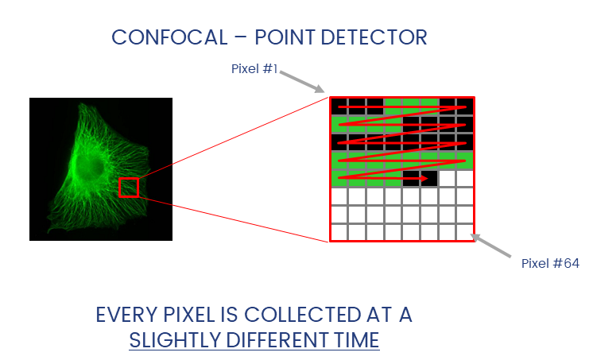
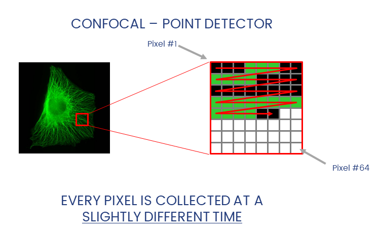Widefield and laser-scanning microscopes acquire images in different ways.
Detectors collect photons and convert them to a voltage
The A/D converter determines the dynamic range of the data

Unless you have good reason not to, always collect data at the highest possible bit depth
32 bit is a special data type called floating point.
TL;DR: pixels can have non-integer values which can be useful in applications like ratiometric imaging.
Introduction to ImageJ & Fiji
A cross platform, open source, Java-based image processing program
- Open Source (free to modify)
- Extensible (plugins)
- Cross-Platform (Java-Based)
- Scriptable for Automation
- Vast Functionality
- Includes the Bioformats Library
ImageJ is a java program for image processing and analysis.
Fiji extends this via plugins.
Learn more about Bio-Formats here
Hands on With Fiji
Getting to know the interface, info & status bars, calibrated vs non-calibrated images
- Open
Task1.pdfand follow the instructions there. - You will need these two images:
01-Photo.tifand02-Biological_Image.tif
Basic Manipulations
Intensity and Geometric adjustments
Images are an array of intensity values. The intensity histogram shows the number (on the y-axis) of each intensity value (on the x-axis) and thus the distribution of intensities
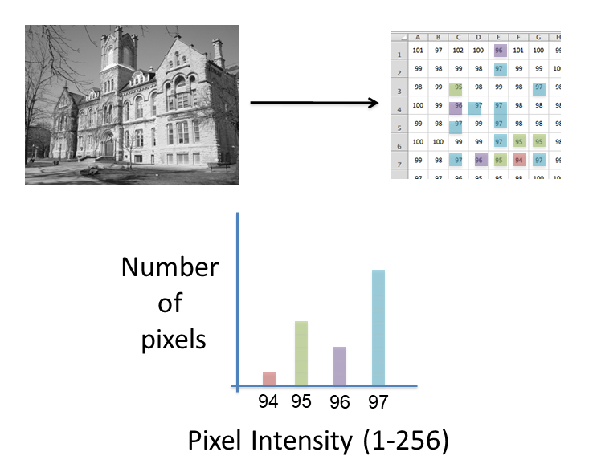Photos typically have a broad range of intensity values and so the distribution of intensities varies greatly
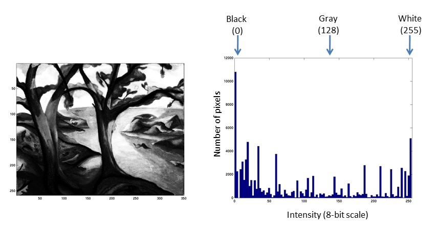Fluorescent micrographs will typically have a much more predicatble distribution:
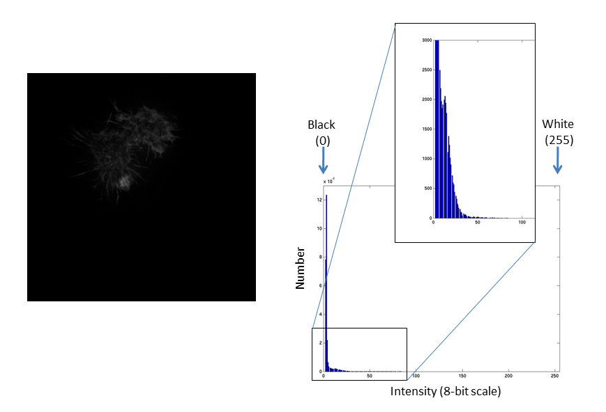The Black and White points of the histogram dictate the bounds of the display (changing these values alters the brightness and contrast of the image)
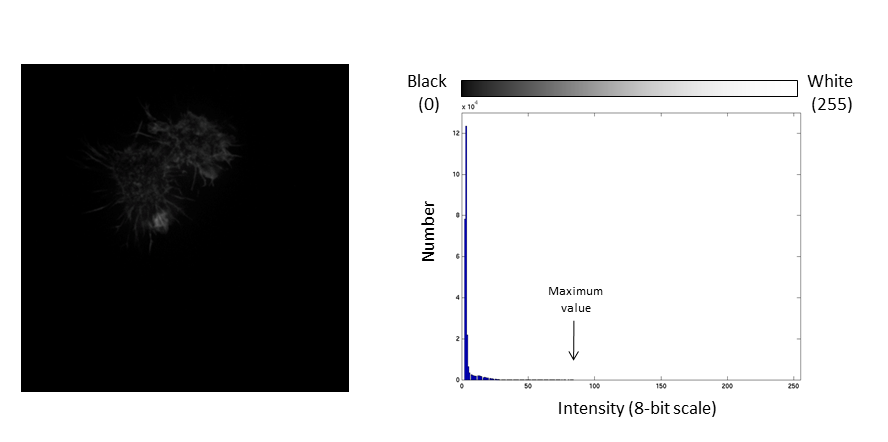- Brightness: horizontal position of the display window
- Contrast: distance between the black and white point
The histogram is now stretched and the intensity value of every pixel is effectively doubled which increases the contrast in the image
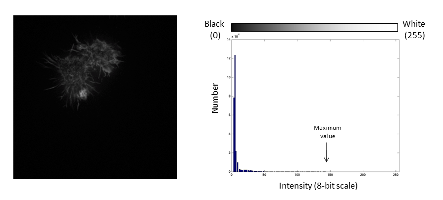If we repeat the same manipulation, the maximum intensity value in the image is now outside the bounds of the display scale!
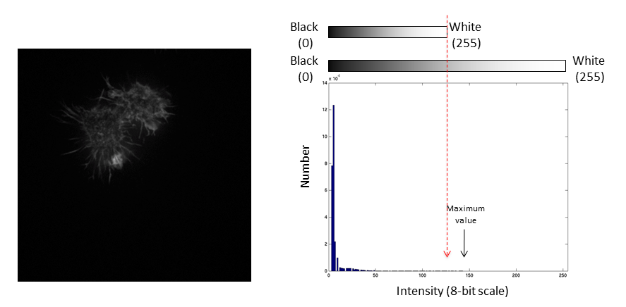Values falling beyond the new White point are dumped into the top bin of the histogram (IE 256 in an 8-bit image) and information from the image is lost
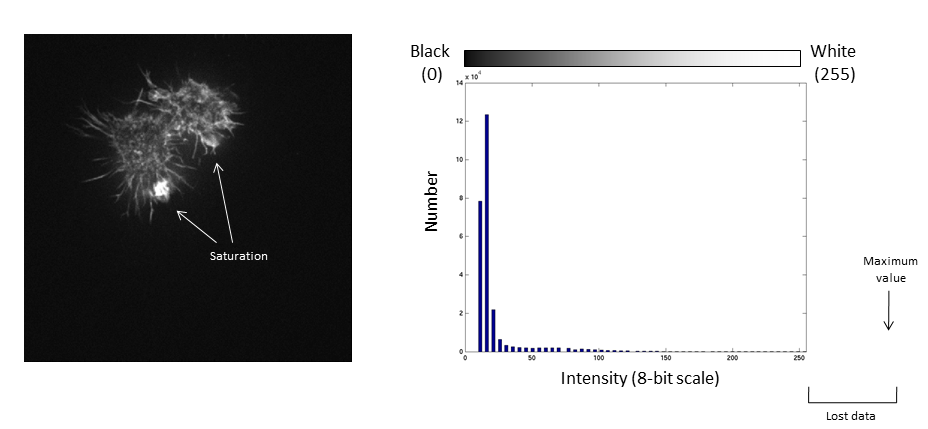Be warned: removing information from an image is deemed an unacceptable maniplulation and can constitute academic fraud!
For an excellent (if slightly dated) review of permissible image manipulation see:Rossner & Yamada (2004): "What's in a picture? The temptation of image manipulation"
The best advice is to get it right during acquisition!
- Open
Task2.pdfand follow the instructions there. - You will need this image:
02-Biological Image.tif
Measurements and scale bars
Making measurements, what to measure, line vs area, adding a scale bar
- Open
Task3.pdfand follow the instructions there. - You will need this image:
02-Biological Image.tif
Stacks
Understanding how Fiji deals with multidimensional images
Some file formats (eg. TIF) can store multiple images in one file which are called stacks
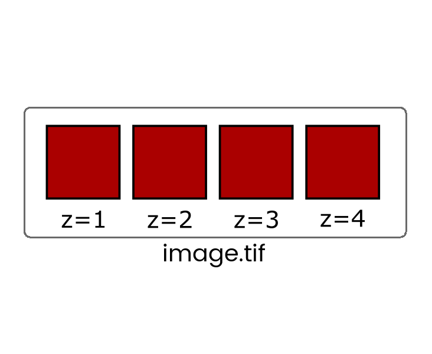 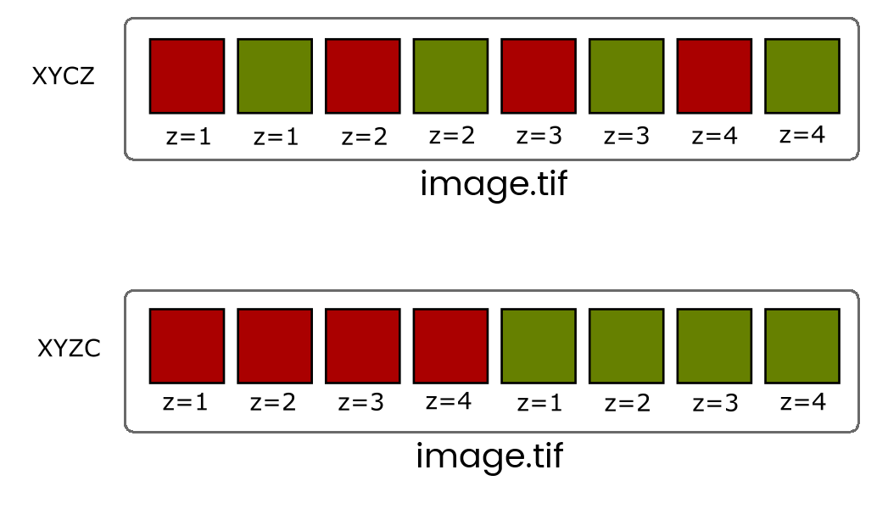When more than one dimension (time, z, channel) is included, the images are still stored in a linear stack so it's critical to know the dimension order (eg, XYCZT, XYZTC etc) so you can navigate the stack correctly.
You will very rarely have to deal with Interleaved stacks because of Hyperstacks which give you independent control of dimensions with additional control bars.
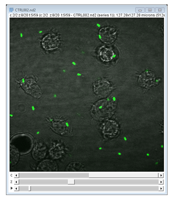 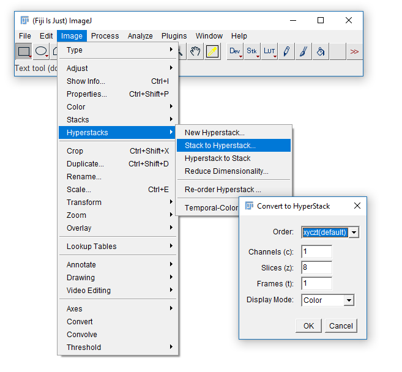Convert between stack types with the [Image > Hyperstack] menu
- Open
Task4.pdfand follow the instructions there. - You will need this image:
06-MultiChannel.tif
Colour in Digital Imaging
What is colour? How and when to use LUTs
Colour in your images is (almost always) dictated by arbitrary lookup tables
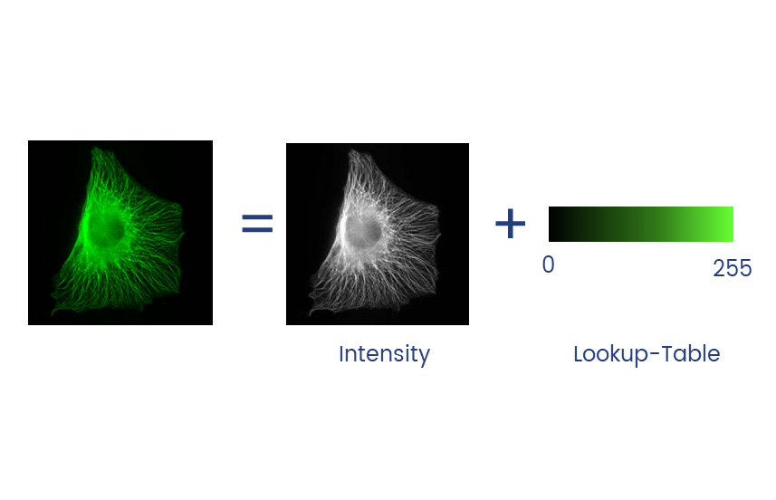 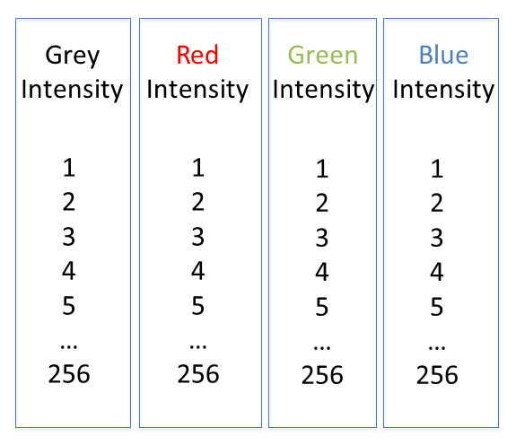Lookup tables (LUTs) translate an intensity (1-256 for 8 bit) to an RGB display value
Colour in your images is (almost always) dictated by arbitrary lookup tables
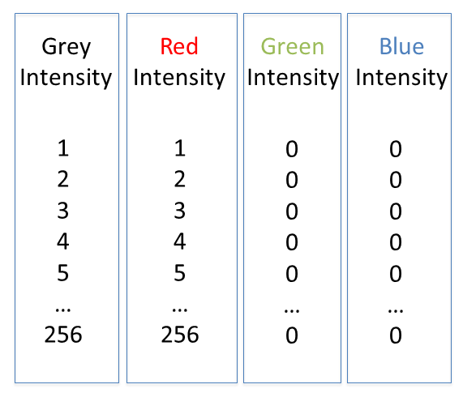 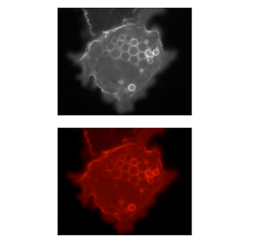Lookup tables (LUTs) translate an intensity (1-256 for 8 bit) to an RGB display value
You can use whatever colours you want (they are arbitrary after all), but the most reliable contrast is greyscale
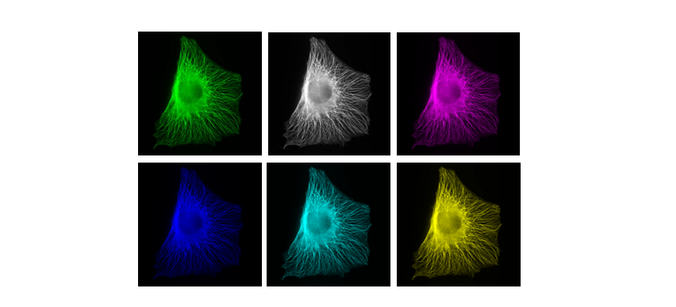More info on colour and sensitivity of the human eye here
Additive and Subtractive Colours can be mixed in defined ways
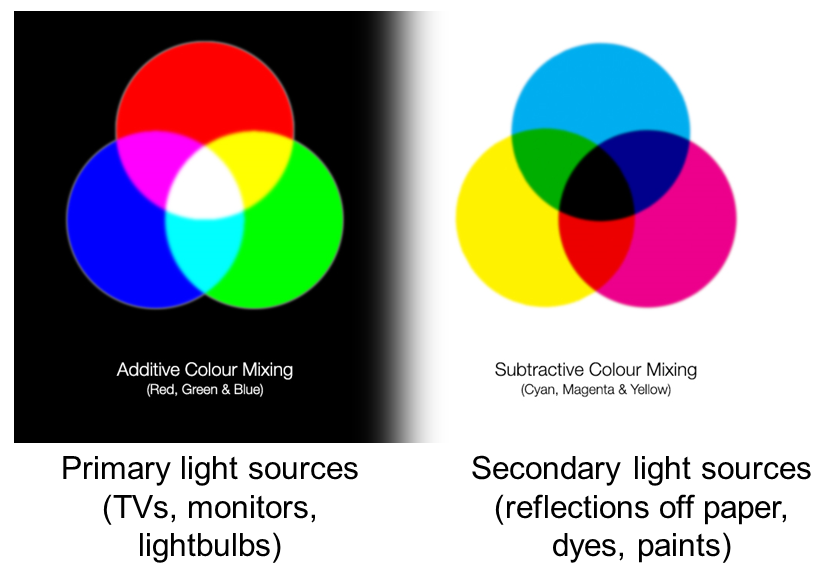Non 'pure' colours cannot be combined in reliable ways (as they contain a mix of other channels)
BUT! Interpretation is highly context dependent!
 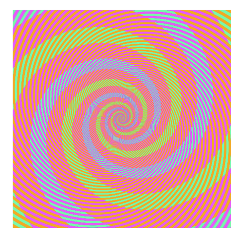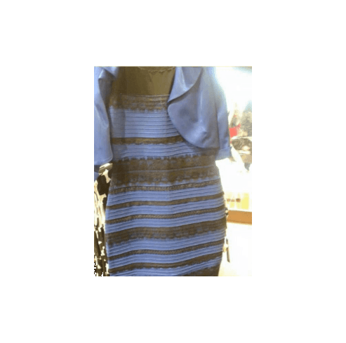
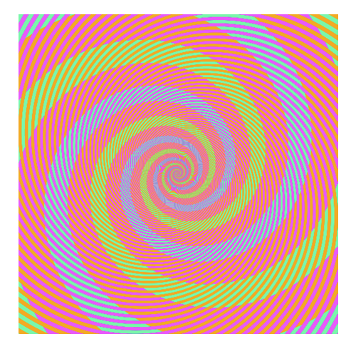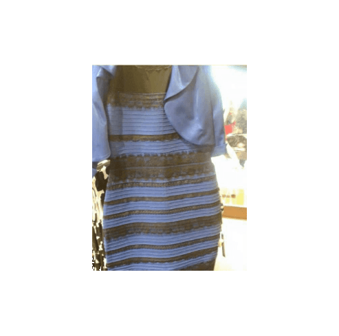
{kind=link}
~10% of the population have trouble discerning Red and Green. Consider using Green and Magenta instead which still combine to white.
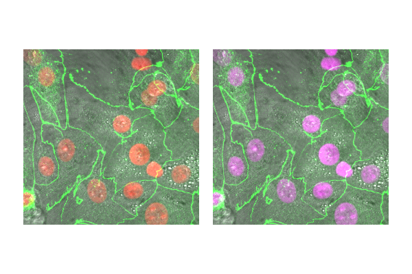- Open
Task5.pdfand follow the instructions there. - You will need this image:
06-MultiChannel.tif
A couple of useful LUTs:
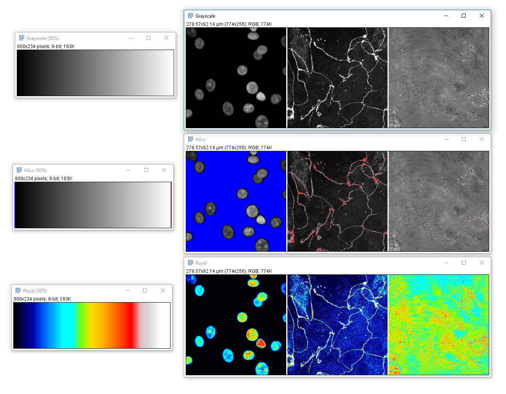Applications
Applications: Segmentation
What is segmentation? thresholding, Connected Component Analysis
Fiji has an odd way of dealing with masks
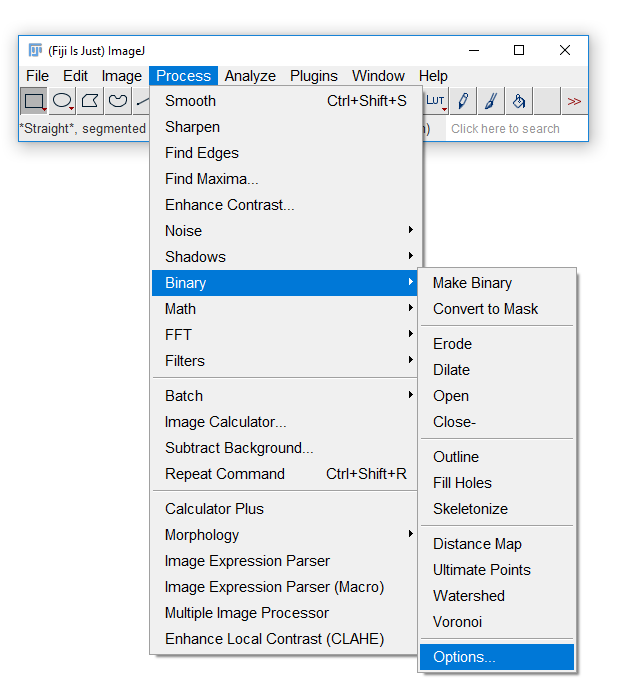 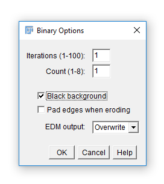Run [Process > Binary > Options] and check Black Background. Hit OK.
Segmentation is the separation of an image into areas of interest and areas that are not of interest
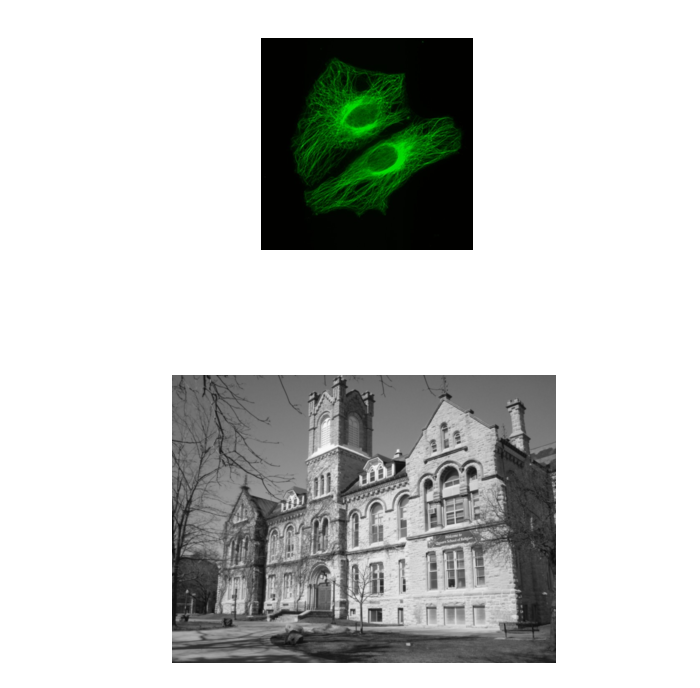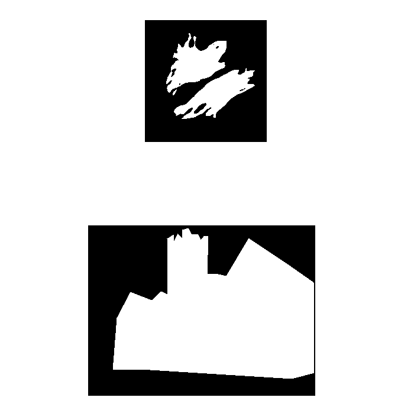The end point for most segmentation is a binary mask (false/true, 0/255)
For most applications, intensity-based thresholding works well. This relies on the signal being higher intensity than the background.
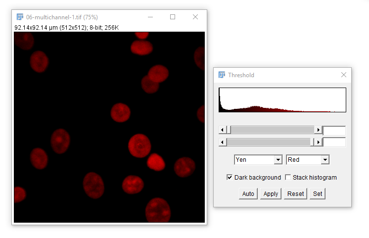We use a Threshold to pick a cutoff.
Task6.pdf and follow the instructions there.07-nuclei.tif and 08-nucleiMask.tifExample visualisation of woundhealing
From the CCI website gallery. Data c/o Daimark Bennett
Applications: Batch Processing
Why batch process? File conversion, batch processing, scripting
Manual analysis (while sometimes necessary) can be laborious, error prone and not provide the provenance required. Batch processing allows the same processing to be run on multiple images.
The built-in [Process > Batch] menu has lots of useful functions:
We'll use a subset of dataset BBBC008 from the Broad Bioimage Benchmark Collection
- Download the zip file from here to the desktop
- Unzip (right click and "Extract All") to end up with a folder on your desktop called
BBBC008_partial

- Make another folder on the desktop called
Output
Task7.pdf and follow the instructions there.Scripting
A very brief foray into scripts
Scripting is useful for running the same process multiple times or having a record of how images were processed to get a particular output
Fiji supports many scripting languages including Java, Python, Scala, Ruby, Clojure and Groovy through the script editor which also recognises the macro language from the previous example (which we'll be using)
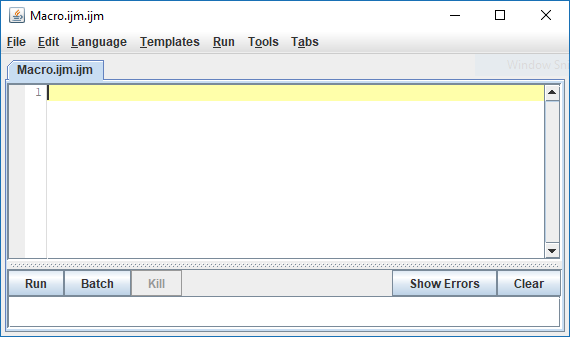As an example, we're going to (manually) create a montage from a three channel image, then see what the script looks like
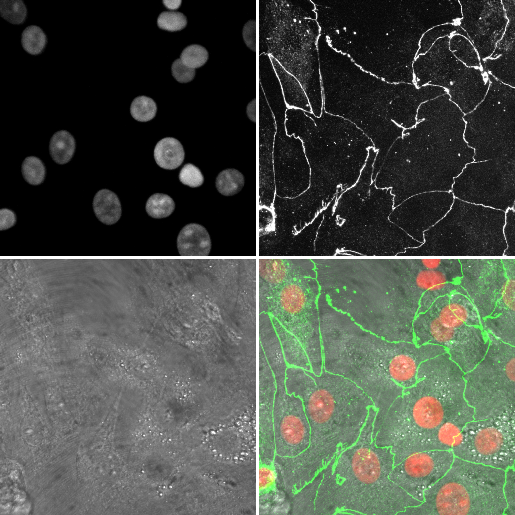- Open
06-MultiChannel.tif - Open the macro recorder:
[Plugins > Macros > Record]
- (If necessary
[Image > Hyperstacks > Stack to Hyperstack]) - Open the channels tool
[Image > Color > Channels Tool]and set the mode tograyscale - Run
[Image > Type > RGB color] - Rename this image to
channelswith[Image > Rename] - Select the original stack, and using the channels tool, set the mode to
composite sum - Run
[Image > Type > RGB color] - Rename this image to
mergewith[Image > Rename] - Close the original (it should be the only 8-bit image open (check the Info bar!)
- Run
[Image > Stacks > Tools > Concatenate]and select Channels and merge in the two boxes (see right) - Run
[Image > Stacks > Make Montage]change the border width to 3 then hit OK
Got it? Have a look at the Macro Recorder and see if you can see the commands you ran
Open the script editor with [File > New > Script] and copy in the following code:
//-- Record the filename
imageName=getTitle();
print("Processing: "+imageName);
//-- Display the stack in greyscale, create an RGB version, rename
Stack.setDisplayMode("grayscale");
run("RGB Color");
rename("channels");
//-- Select the original image
selectWindow(imageName);
//-- Display the stack in composite, create an RGB version, rename
Stack.setDisplayMode("composite");
run("RGB Color");
rename("merge");
//-- Close the original
close(imageName);
//-- Put the two RGB images together
run("Concatenate...", " title=newStack open image1=channels image2=merge");
//-- Create a montage
run("Make Montage...", "columns=4 rows=1 scale=0.50 border=3");
//-- Close the stack (from concatenation)
close("newStack");
Open 06-MultiChannel.tif again and hit Run
Comments, variables, print, active window
This script operates on an open image but it's easily converted to a batch processing script using the built in templates:
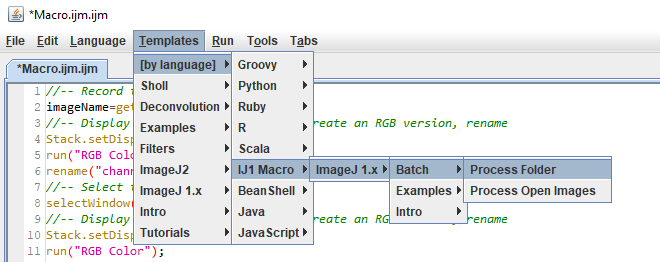The full script is here. I added these lines at the top and bottom:
open(input + File.separator + file);saveAs("png", output + File.separator + replace(file, suffix, ".png"));
close("*");
We'll go into more detail on scripts in the future
In the meantime:
Applications: Co-localisation
Use cases, some simple guidance, JaCoP
Adapted from a slide by Fabrice Cordelieres
Colocalisation is highly dependent upon resolution! Example:
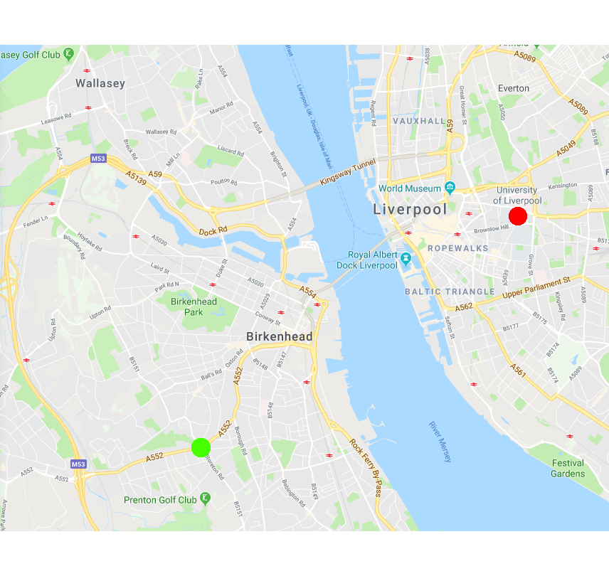 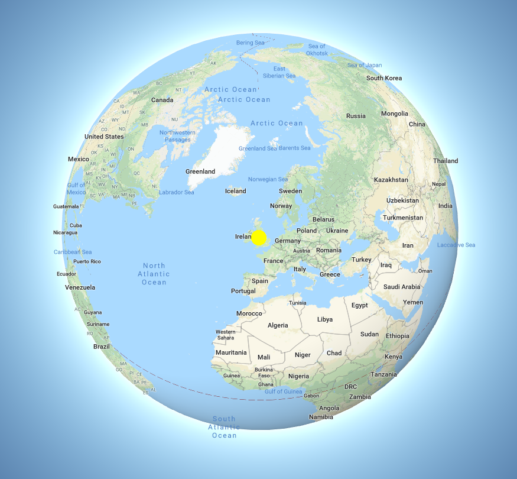Same idea goes for cells. Keep in mind your imaging resolution!
We will walk through using JaCoP (Just Another CoLocalisation Plugin) to look at Pearson's and Manders' analysis
If you're doing colocalisation analysis at all, I highly recommend reading the companion paper https://doi.org/10.1111/j.1365-2818.2006.01706.x
Pearson's Correlation Coefficient
- For each pixel, plot the intensities of two channels in a scatter plot
- Ignore pixels with only one channel (IE intensity below BG)
- P value describes the goodness of fit (-1 to 1)
- 1 = perfect correlation
- 0 = no positive or negative correlation
- -1 = exclusion
Figure from https://doi.org/10.1111/j.1365-2818.2006.01706.x
- Download
JaCoP - Run
[Plugins > Install...], point to the jar file, then press "Save" - Restart Fiji
- Open
11-colocA.tifand12-colocB.tif - Run
[Plugins > JaCoP], uncheck everything except Pearsons, select the same image for both channels - Repeat for different combinations of these images and also
13and14
- Great for complete colocalisation
- Unsuitable if there is a lot of noise or partial colocalisation (see below)
- Midrange P-values (-0.5 to 0.5) do not allow reliable conclusions to be drawn
- Bleedthrough can be particularly problematic (as they will always correlate)
Manders' Overlap Coefficient
- Removes some of the intensity dependence of Pearson's and provides channel-specific overlap coefficients (M1 & M2)
- Values from 0 (no overlap) to 1 (complete overlap)
- Defined as "the ratio of the summed intensities of pixels from one channel for which the intensity in the second channel is above zero to the total intensity in the first channel"
- Use the same images from last time (
11,12,13and14) - Run
[Plugins > JaCoP], check both Pearsons and Manders - Run for different combinations of these images
- Note the differences in coefficients especially in images 13 and 14
- [BONUS] add some noise
[Process > Noise > Add Noise]or blur your images[Process > Filters > Gaussian Blur]and see how that affects the coefficients
Applications: Tracking
Correlating spatial and temporal phenomena, Feature detection, linkage, gotchas
Life exists in the fourth dimension. Tracking allows you to correlate spatial and temporal properties.
Most partcles look the same! Without any way to identify them, tracking is probabilistic.
Tracking has two parts: Feature Identification and Feature Linking

For every frame, features are detected, typically using a Gaussian-based method (eg. Laplacian of Gaussian: LoG)
Spots can be localised to sub-pixel resolution!
Without sub-pixel localisation, the precision of detection is limited to whole pixel values.
Feature linkage
For each feature, all possible links in the next frame are calculated. This includes the spot disappearing completely.
A 'cost matrix' is formed to compare the 'cost' of each linkage. This is globally optimised to calculate the lowest cost for all linkages.
In the simplest form, a cost matrix will usually consider distance. Many other parameters can be used such as:
- Intensity
- Shape
- Quality of fit
- Speed
- Motion type
Which can allow for a more accurate linkage especially in crowded or low S/N environments
Open 10-tracks.tif
Hit the arrow to play the movie. Right Click on the arrow to set playback speed
If you're interested in how the dataset was made see this snippet
Run [Plugins > Tracking > Trackmate]
- Trackmate guides you through tracking using the Next and Prev buttons
- The first dialog lets you select a subset (in space and time) to process. This is handy on large datasets when you want to calculate parameters before processing the whole dataset
- Hit Next, keep the default (LoG) detector then hit Next again to move onto Feature detection.
- Enter a Blob Diameter of 2 (note the scaled units)
- Hit preview. Without any threshold, all the background noise is detected as features
- Add a threshold of 0.1 and hit Preview again.
Generally your aim should be to provide the minimum threshold that removes all noise. Slide the navigation bar, then hit Preview to check out a few other timepoints.
Hit next, accepting defaults until you reach 'Set Filters on Spots'
- Hit next, accepting defaults until you reach 'Settings for Simple LAP tracker'
- Keep the defaults and hit Next
- You have tracks!
Linking Max Distance Sets a 'search radius' for linkage
Gap-closing Max Frame Gap Allows linkages to be found in non-adjacent frames
Gap-closing Max Distance Limits search radius in non-adjacent frames
Common outputs from Trackmate: (1) Tracking data
Common outputs from Trackmate: (2) Movies!

You may have to adjust the display options to get the tracks drawing the way you want (try "Local Backwards")
While simple, Tracking is not to be taken on lightly!
- For the best results make sure the inter-particle distance is greater than the frame-to-frame movement. If not, try to increase resolution (more pixels) or decrease interval (more frames)
- The search radius increases processing time with HUGE datasets but in most case, has little effect on processing time. Remember that closer particles will still be linked preferably if possible.
- Keep it simple! Unless you have problems with noise, blinking, focal shifts and similar, do not introduce gap closing as this may lead to false-linkages
- 'Simple LAP tracker' does not include merge/spliting events, however Trackmate ships with the more complex 'LAP Tracker' which can handle merge/splitting events (but keep in mind your system!)
- Quality control! Look at your output carefully and make sure you're not getting 'jumps' where one particle is linked to another incorrectly
Applications: Stitching
Resolution vs field size, stitching, using overlaps, issues and bugs
Increasing resolution (via higher NA lenses) almost always leads to a reduced field
Often you will want both!
We can achieve this with tile scanning (IE. imaging multiple adjacent fields)
Stitching is the method used to put them back together again
Images acquired as adjacent frames (zero overlap)
- Open
Stitching_noOverlap.zip. Unzip to the desktop. - Run
[Plugins > Stitching > Grid/Collection Stitching] - Select: Column by Column | Up & Right
- Settings:
- Grid Size: 2x2
- Tile Overlap: 0
- Directory: {path to your folder}
- File Names: replace the numbers with
{i}zero pad with morei- noOverlap_{iii}.tif - Uncheck all the options [OPTIONAL] Check add as ROI
- Hit OK (accept fast fusion)
Why do the images not line up?
Run [Plugins > Stitching > Grid/Collection Stitching] again
Check the settings are as before but add "compute overlap" and hit OK
- Open
Stitching_Overlap.zip. Unzip to the desktop. - Run
[Plugins > Stitching > Grid/Collection Stitching]again - Change the directory, filename and overlap.
- Hit OK
Two things to remember when using Grid/Collection Stitching:
- Default (R,G,B) LUTs are used after stitching ()
- All calibration information is stripped ()
- Stitching will have a harder time with sparse features or uneven illumination (example here)
The most important point is to know your data!
- Grid layout (dimensions and order!)
- Overlap
- Calibration
Thank you for your attention!
We will send you a survey for feedback; please take 2 minutes to answer, it helps us a lot!